{kind=link}
{kind=link}

Most likely a forgery
Return To Catalogue - United States locals overview - Spaulding to Swarts - Westervelt to Zieber - United States
Note: on my website many of the
pictures can not be seen! They are of course present in the cd's;
contact me if you want to purchase the catalogue.
Only a blue stamp was issued in 1852. They are not very rare. I know that Hussey, Scott and Taylor made forgeries of this stamp. I do not know the distinguishing characteristics of the genuine stamps.
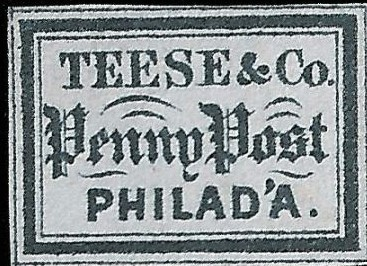
Forgery, apostrophe behind "PHILAD" different. Possibly
made by the forger Hussey.
Most likely a forgery
A red forgery, note that the apostrophe behind "PHILAD"
is (almost) connected to the arc above it. There is no
"." behind "PHILAD'A". It was made by Taylor and also exists in the colors brown,
violet, green, yellow, black and blue.
Forgery, note the very pronounced "~" above the
"P" of "PHILAD'A".
Scott forgery, reduced size. Note the
very long arches above the "enny" of "Penny".
Another forgery, reduced size.
(1 c, image obtained from a Siegel auction)
Issued in Philadelphia in 1848 in the values 1 c (black on yellow) and 2 c (black on yellow, one example known only)
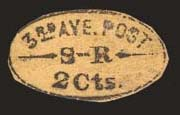
(On fragment of letter, together with an US stamp, image obtained
from a Siegel auction)
This local post was established somewhere in 1855 or 1856. The following colours exist (all 2 c): black on green, blue on green, black on brown, black on yellow, black on blue and black on lilac. More information can be found on the website: http://www.siegelauctions.com/enc/carriers/thirdave.htm. It seems that these stamps are always cut to shape.
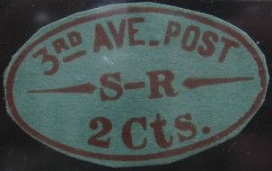
Taylor forgery
A forgery made by Taylor exists, with the "C" of "Cts." to narrow (see image above).
I presume the next stamp is a forgery:
Forgery with different inscription "AVE.3. S.R. POST
OFFICE" and no lines in front, in between and behind "S
R".
Some bogus stamps exist where the text "3RD AVENUE S.R. POST OFFICE" is written in three straight lines surrounded by a rectangle:
Bogus design, it even exists in several types.
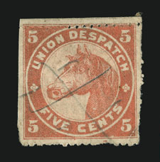
(Reduced size, genuine, image obtained from a Siegel auction)
Though not listed in most catalogues, the Union Despatch stamp seems to have existed genuinly in Chicago. Two values exist: 5 c red and 20 c green. According to a Siegel auction, the genuine design has faint vertical lines in the vignette background around the head of the horse. Genuine stamps also show at least a part of the rouletted perforation. Only six 5 c red stamps and two 20 c green stamps are known to exist.
Genuine stamp?
I have even seen two 5 c green tete-beche forgeries.
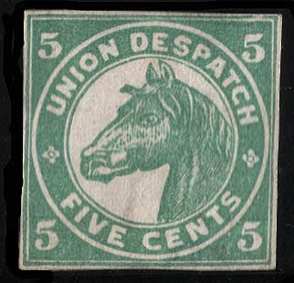
(Union Despatch, horse in circle, forgery made by Taylor)
Click here for more Taylor forgeries.
Not sure if this is a real forgery or a cutout from a catalogue.
It resembles the above forgery, but is printed much blurrer.
It has a slanting "5". It was recorded in the value 5 c blue (and green as shown above?). It also has less shading on the horse's head and the "F' of "FIVE" is much smaller.
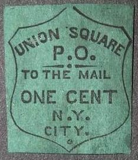
Issued in 1852 in 1 c (black on green) and 2 c (black on lilac). These stamps are not very rare unused. Forgeries exist.
First forgery of the 1 c value:
In this forgery the "C" and "I" are touching at the bottom, the "C"is also different from a genuine stamp. It exists in bogus colors, for example black on blue (see image above). I've also seen it in black on green.
Second forgery of the 1 c value
Reduced sizes
In this forgery, the "U" of "UNION" is touching the left frame line. The "Y" of "CITY" is placed at some distance from "CIT". It exists in several bogus colors as well: black on lilac, black on grey.
Third forgery of the 1 c value
Reduced size
This forgery is rather deceptive. In my view, the central part of the "M" of of "MAIL" does not go down far enough.
Fourth forgery of the 1 c value
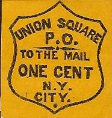
The fourth forgery has the "C" of "CITY" very close to the frameline below it. I have seen it in many colors: black on lilac, red, black, blue, orange, black on violet, grey, red on yellow, black on yellow, red on blue, etc.
Other forgeries might exist of the 1 c value.
First forgery of the 2 c value:
This forgery has the "C" of "CITY" too small.
Second forgery of the 2 c value:
Reduced sizes
There is a very fat dot at the bottom part of the stamp (when compared to the genuine stamp). The "D" of "DISPATCH" is too small and the "S" of "SQUARE" is different from the genuine 'S'. If my information is correct, this forgery was made by the forger Taylor. I've also seen it in the color black on green (the color of the 1 c).
Third forgery of the 2 c value:
Reduced size
In my opinion, the "C" of "CITY" has a too pronounced upwards pointing right bottom part. If my information is correct, this forgery might have been produced by Scott.
Other forgeries of the 2 c value might exist.
Genuine, image obtained from
http://www.siegelauctions.com/1999/817/yf817278.htm
Walton & Co issued only one stamp: the 2 c black on lilac. The only cancel I have seen is "PAID W.W." in two lines. I have also seen these stamps cut to an oval shape on letter.
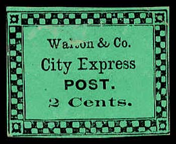
(A bogus Walton & Co stamp in a completely different design,
apparently made by the forger S. Allan
Taylor. I have also seen the 2 c red and 2 c black on yellow
values)
1856 Man on horse
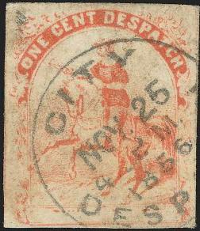
Issue for Baltimore, two types exist; one with the letter poiting
to the "O" and one to the "N" of
"ONE"
(images obtained from a Siegel auction)
1 c violet (inscription "WASHINGTON CITY" at bottom) 1 c red (no name at bottom)
This local post was founded by Mr. Wiley. There are two types of the 1 c red; in type I the letter is pointing towards the "O" of "ONE", in type II this message points to the "N" of this same word.
I presume the next stamps are forgeries, some of them have the inscription 'WASHINGTON' in white letters at the bottom (without the word 'CITY'), I have also seen orange stamps like this.
Other forgeries (at least 6 different types), also with inscription 'WASHINGTON CITY' are known to exist (sorry, no picture available yet).
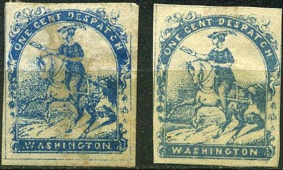 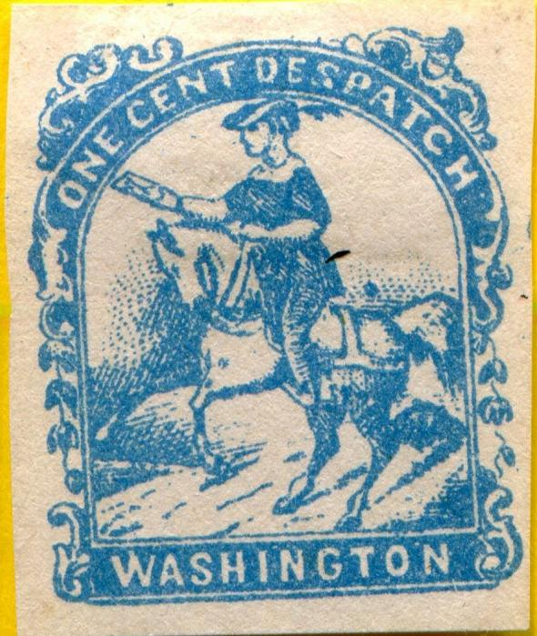
Presumably all forgeries.
{kind=link}
{kind=link}
{kind=link}
{kind=link}
{kind=link}
{kind=link}